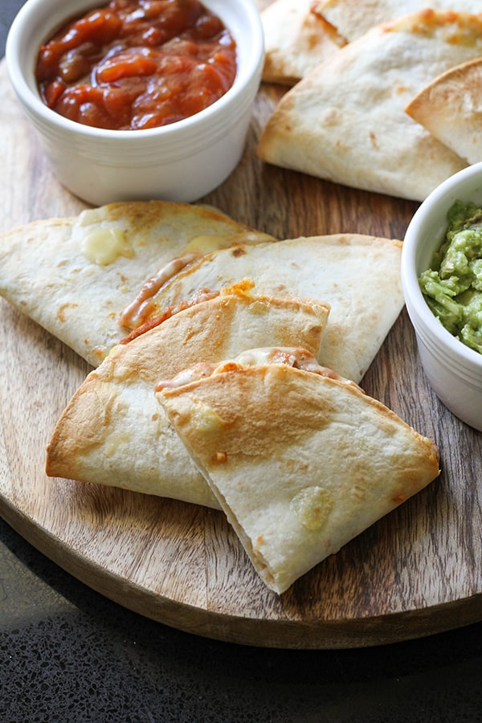

Air Fryer Quesadilla

Description
Ingredients
- 2 Tortillas (taco size)
- Shredded Cheese
- Shredded Chicken
- 1 Onion
- 1 Bell Pepper
- Salsa
- Sour Cream
- Cooking Oil
Steps
- Cut Onion and Bell Pepper into Strips
- Sautee Onion and Pepper in a pan with a little bit of oil until slightly soft
- Preheat Air Fryer to 385
- Lay down 1 tortilla and sprinkle with cheese
- Add desired amount of shredded chicken and onion/peppers
- Sprinkle more cheese and place 2nd tortilla on top
- Use a fork to crimp the edges of the quesadilla together
- Lightly brush outside of tortillas with oil
- Cook in Air Fryer at 380 for 10 minutes, flipping the quesadilla halfway
- Remove from Air Fryer, cut into slices and serve with salsa and sour cream. Enjoy!